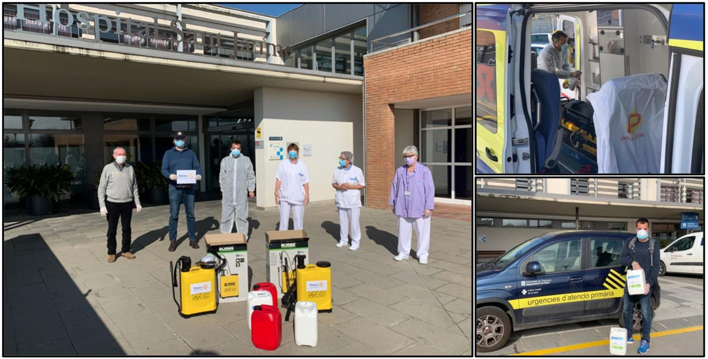

Where these coatings earn their place
ActivaColours coatings are specified where self-cleaning, lower maintenance and measured pollutant reduction matter most. Below are the sectors where the value is clearest — and the evidence specifiers should ask us for.
Reducing roadside pollution on the surfaces you already own
Under daylight, the coating breaks down nitrogen oxides (NOx) and other airborne pollutants on the treated surface. For councils, highways authorities, tunnels and transport hubs, that turns existing façades, noise barriers and pavements into part of an air-quality strategy — backed by ISO 22197-1 test data rather than slogans.
| Products | PhotoCryl (asphalt), PhotoTunnel, PhotoSiloxane, 3C Pavement |
| Evidence | NOx breakdown measured to ISO 22197-1 (ask for certificate) |
| Buyers | Local authorities, highways, ESG-led developers |


Self-cleaning façades you can write into a spec
Specify a coating that keeps surfaces looking cleaner for longer and reduces the cost of access and repainting over a building's life. We supply datasheets, ISO 27448 self-cleaning and ISO 22197-1 pollutant test data, colour ranges and substrate guidance so it drops straight into your specification.
| Products | PhotoSiloxane, PhotoSilicate, PhotoActiva TB |
| Evidence | ISO 27448 (self-cleaning), datasheets, colour data |
| Buyers | Architects, façade engineers, main contractors |
Lower whole-life maintenance, not just a fresh coat
For estates teams and social housing, the value is lifecycle cost: surfaces that stay cleaner shed dirt with rainfall, so cleaning cycles and repaint intervals stretch out. Low-VOC formulations suit occupied buildings. We can model the maintenance saving against your current cycle.
| Products | PhotoSiloxane, PhotoDeco, PhotoLacq, PhotoActiva S |
| Evidence | Low-VOC, self-cleaning, durability data |
| Buyers | Facilities managers, housing providers, large estates |


Breathable protection for historic façades
Mineral potassium-silicate and invisible treatments keep heritage stone, brick and render self-cleaning without changing appearance or trapping moisture. Ideal where a coating must be discreet, breathable and durable.
| Products | PhotoSilicate, PhotoActiva TB, PhotoActiva S |
| Evidence | Breathability, invisible finish, durability |
| Buyers | Conservation architects, heritage contractors |
Specification resources
For any project we can supply: product datasheets, safety data sheets, ISO 22197-1 (NOx) and ISO 27448 (self-cleaning) test certificates where available, colour ranges, coverage and substrate guidance, and pallet pricing.